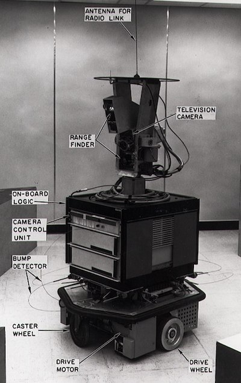

History of machine learning⚓︎

Sketchnote by Tomomi Imura
Pre-lecture quiz⚓︎

🎥 Click the image above for a short video working through this lesson.
In this lesson, we will walk through the major milestones in the history of machine learning and artificial intelligence.
The history of artificial intelligence (AI) as a field is intertwined with the history of machine learning, as the algorithms and computational advances that underpin ML fed into the development of AI. It is useful to remember that, while these fields as distinct areas of inquiry began to crystallize in the 1950s, important algorithmic, statistical, mathematical, computational and technical discoveries predated and overlapped this era. In fact, people have been thinking about these questions for hundreds of years: this article discusses the historical intellectual underpinnings of the idea of a 'thinking machine.'
Notable discoveries⚓︎
- 1763, 1812 Bayes Theorem and its predecessors. This theorem and its applications underlie inference, describing the probability of an event occurring based on prior knowledge.
- 1805 Least Square Theory by French mathematician Adrien-Marie Legendre. This theory, which you will learn about in our Regression unit, helps in data fitting.
- 1913 Markov Chains, named after Russian mathematician Andrey Markov, is used to describe a sequence of possible events based on a previous state.
- 1957 Perceptron is a type of linear classifier invented by American psychologist Frank Rosenblatt that underlies advances in deep learning.
- 1967 Nearest Neighbor is an algorithm originally designed to map routes. In an ML context it is used to detect patterns.
- 1970 Backpropagation is used to train feedforward neural networks.
- 1982 Recurrent Neural Networks are artificial neural networks derived from feedforward neural networks that create temporal graphs.
✅ Do a little research. What other dates stand out as pivotal in the history of ML and AI?
1950: Machines that think⚓︎
Alan Turing, a truly remarkable person who was voted by the public in 2019 as the greatest scientist of the 20th century, is credited as helping to lay the foundation for the concept of a 'machine that can think.' He grappled with naysayers and his own need for empirical evidence of this concept in part by creating the Turing Test, which you will explore in our NLP lessons.
1956: Dartmouth Summer Research Project⚓︎
"The Dartmouth Summer Research Project on artificial intelligence was a seminal event for artificial intelligence as a field," and it was here that the term 'artificial intelligence' was coined (source).
Every aspect of learning or any other feature of intelligence can in principle be so precisely described that a machine can be made to simulate it.
The lead researcher, mathematics professor John McCarthy, hoped "to proceed on the basis of the conjecture that every aspect of learning or any other feature of intelligence can in principle be so precisely described that a machine can be made to simulate it." The participants included another luminary in the field, Marvin Minsky.
The workshop is credited with having initiated and encouraged several discussions including "the rise of symbolic methods, systems focussed on limited domains (early expert systems), and deductive systems versus inductive systems." (source).
1956 - 1974: "The golden years"⚓︎
From the 1950s through the mid '70s, optimism ran high in the hope that AI could solve many problems. In 1967, Marvin Minsky stated confidently that "Within a generation ... the problem of creating 'artificial intelligence' will substantially be solved." (Minsky, Marvin (1967), Computation: Finite and Infinite Machines, Englewood Cliffs, N.J.: Prentice-Hall)
natural language processing research flourished, search was refined and made more powerful, and the concept of 'micro-worlds' was created, where simple tasks were completed using plain language instructions.
Research was well funded by government agencies, advances were made in computation and algorithms, and prototypes of intelligent machines were built. Some of these machines include:
-
Shakey the robot, who could maneuver and decide how to perform tasks 'intelligently'.

Shakey in 1972
-
Eliza, an early 'chatterbot', could converse with people and act as a primitive 'therapist'. You'll learn more about Eliza in the NLP lessons.

A version of Eliza, a chatbot
-
"Blocks world" was an example of a micro-world where blocks could be stacked and sorted, and experiments in teaching machines to make decisions could be tested. Advances built with libraries such as SHRDLU helped propel language processing forward.

🎥 Click the image above for a video: Blocks world with SHRDLU
1974 - 1980: "AI Winter"⚓︎
By the mid 1970s, it had become apparent that the complexity of making 'intelligent machines' had been understated and that its promise, given the available compute power, had been overblown. Funding dried up and confidence in the field slowed. Some issues that impacted confidence included:⚓︎
- Limitations. Compute power was too limited.
- Combinatorial explosion. The amount of parameters needed to be trained grew exponentially as more was asked of computers, without a parallel evolution of compute power and capability.
- Paucity of data. There was a paucity of data that hindered the process of testing, developing, and refining algorithms.
- Are we asking the right questions?. The very questions that were being asked began to be questioned. Researchers began to field criticism about their approaches:
- Turing tests came into question by means, among other ideas, of the 'chinese room theory' which posited that, "programming a digital computer may make it appear to understand language but could not produce real understanding." (source)
- The ethics of introducing artificial intelligences such as the "therapist" ELIZA into society was challenged.
At the same time, various AI schools of thought began to form. A dichotomy was established between "scruffy" vs. "neat AI" practices. Scruffy labs tweaked programs for hours until they had the desired results. Neat labs "focused on logic and formal problem solving". ELIZA and SHRDLU were well-known scruffy systems. In the 1980s, as demand emerged to make ML systems reproducible, the neat approach gradually took the forefront as its results are more explainable.
1980s Expert systems⚓︎
As the field grew, its benefit to business became clearer, and in the 1980s so did the proliferation of 'expert systems'. "Expert systems were among the first truly successful forms of artificial intelligence (AI) software." (source).
This type of system is actually hybrid, consisting partially of a rules engine defining business requirements, and an inference engine that leveraged the rules system to deduce new facts.
This era also saw increasing attention paid to neural networks.
1987 - 1993: AI 'Chill'⚓︎
The proliferation of specialized expert systems hardware had the unfortunate effect of becoming too specialized. The rise of personal computers also competed with these large, specialized, centralized systems. The democratization of computing had begun, and it eventually paved the way for the modern explosion of big data.
1993 - 2011⚓︎
This epoch saw a new era for ML and AI to be able to solve some of the problems that had been caused earlier by the lack of data and compute power. The amount of data began to rapidly increase and become more widely available, for better and for worse, especially with the advent of the smartphone around 2007. Compute power expanded exponentially, and algorithms evolved alongside. The field began to gain maturity as the freewheeling days of the past began to crystallize into a true discipline.
Now⚓︎
Today machine learning and AI touch almost every part of our lives. This era calls for careful understanding of the risks and potentials effects of these algorithms on human lives. As Microsoft's Brad Smith has stated, "Information technology raises issues that go to the heart of fundamental human-rights protections like privacy and freedom of expression. These issues heighten responsibility for tech companies that create these products. In our view, they also call for thoughtful government regulation and for the development of norms around acceptable uses" (source).
It remains to be seen what the future holds, but it is important to understand these computer systems and the software and algorithms that they run. We hope that this curriculum will help you to gain a better understanding so that you can decide for yourself.

🎥 Click the image above for a video: Yann LeCun discusses the history of deep learning in this lecture
🚀Challenge⚓︎
Dig into one of these historical moments and learn more about the people behind them. There are fascinating characters, and no scientific discovery was ever created in a cultural vacuum. What do you discover?
Post-lecture quiz⚓︎
Review & Self Study⚓︎
Here are items to watch and listen to:
This podcast where Amy Boyd discusses the evolution of AI

Assignment⚓︎
创建日期: November 22, 2023